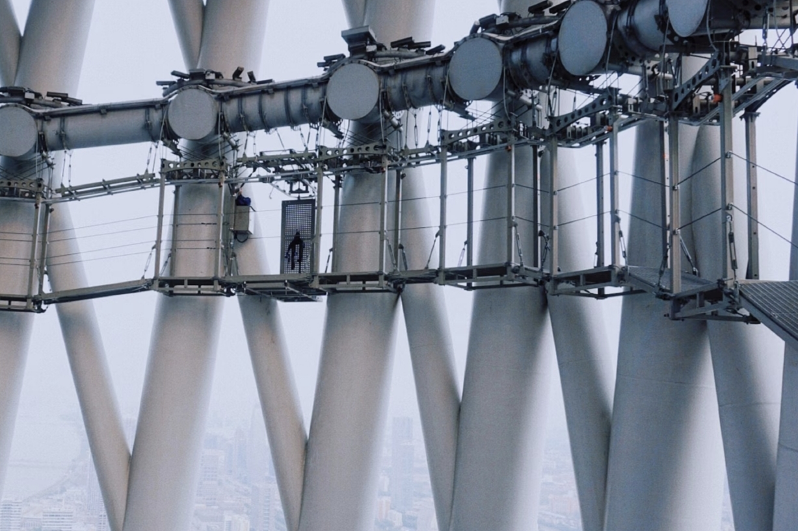
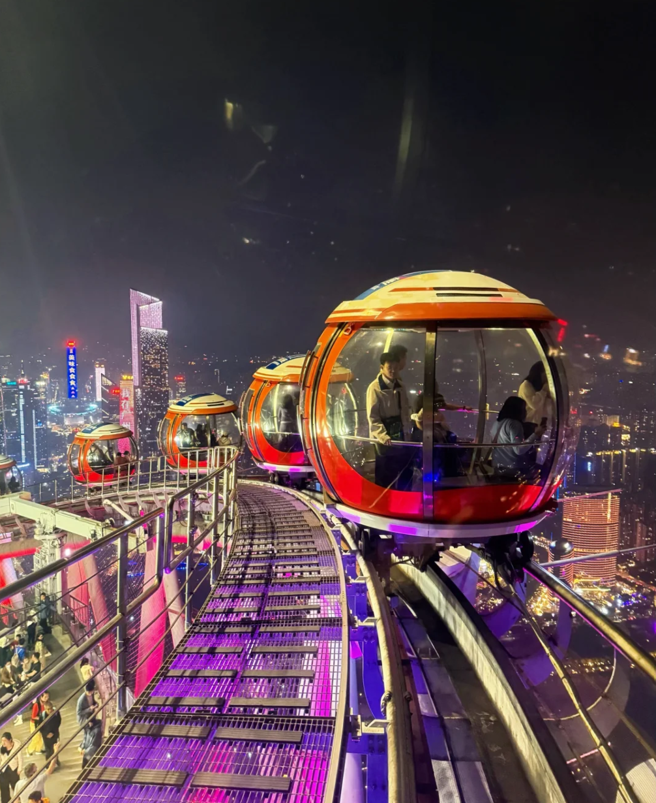

景点概述
广州塔（Canton Tower）又称广州新电视塔，昵称小蛮腰，位于中国广州市海珠区（艺洲岛）赤岗塔附近，距离珠江南岸125米，与海心沙岛和广州市21世纪CBD区珠江新城隔江相望。
广州塔塔身主体高454米，天线桅杆高146米，总高度600米。是中国第一高、世界第三高的旅游观光塔，仅次于阿联酋迪拜哈利法塔（828米）和日本东京晴空塔（634米）。
广州塔有5个功能区和多种游乐设施，包括488米观景平台、高空横向摩天轮、极速云霄跳楼机、蜘蛛侠栈道等，以及2个观光大厅，有悬空走廊、天梯、4D和3D动感影院、中西美食、会展设施、购物商场及科普展示厅。
开放时间
- 周一至周五 9:30 - 22:30
- 周六至周日 9:00 - 23:00
- 法定节假日 9:00 - 23:00
门票价格
- 观景平台（433米） 150元/人
- 摩天轮游乐套票 298元/人
- 极速云霄游乐套票 298元/人
- 488米观景平台 398元/人
景点画廊
欣赏广州塔的壮丽景色，从不同角度感受这座城市地标建筑的魅力。

广州塔夜景
夜幕降临时，广州塔亮起绚丽多彩的灯光，成为珠江畔最耀眼的风景线。

高空俯瞰
站在433米高的观景平台上，可以俯瞰整个广州市区的壮丽景色。

高空横向摩天轮
全球最高的横向摩天轮，位于广州塔450米高空处，提供独特的观景体验。

蜘蛛侠栈道
全球最高最长的空中漫步云梯，沿着塔体外围搭建，让您感受高空行走的刺激。

内部装饰
广州塔内部设计现代简约，融合了岭南文化元素，营造出独特的空间体验。

与珠江相映
广州塔与珠江相互映衬，形成了独特的城市景观，是摄影爱好者的天堂。
交通指南
无论您选择哪种交通方式，都能轻松抵达广州塔，开始您的探索之旅。
地铁
- 乘坐地铁3号线到赤岗塔站A出口，步行约5分钟可到达广州塔。
- 乘坐地铁APM线到广州塔站，直接抵达广州塔底部。
公交
- 乘坐11路、262路、468路、旅游观光1线到广州塔西站。
- 乘坐121路、121A路、204路、旅游观光2线到赤岗塔站。
自驾
- 从天河区出发，沿临江大道向西行驶，经猎德大桥后即可到达。
- 广州塔设有多个停车场，提供充足的停车位，收费标准为10元/小时。
珠江游船
- 乘坐珠江游船，在广州塔码头下船，即可到达广州塔。
- 夜游珠江是欣赏广州塔夜景的最佳方式，沿途还可欣赏珠江两岸的美景。

联系我们
- 广州市天河区天河路520号
- +86 20 12345678
- info@guangzhoutourism.com
订阅更新
订阅我们的新闻通讯，获取最新的旅游信息和优惠。